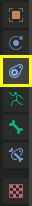
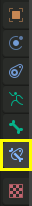
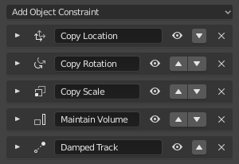

简介¶
约束是通过使用数值 (如 限制位置约束), 或者目标对象(如 复制位置约束)来控制物体属性(例如其位置、旋转、缩放)的方法。
它的主要用途在动画项目中，当然，在静态项目中也有用。
通过其约束引用的目标可以间接控制物体的动画(这是间接动画的一种形式)。实际上，目标对象可以控制约束的物体属性，因此，目标对象将间接地带动物体的动作。
可以调整约束里的数值，如滑动 Influence影响 ，或者在使用骨架的骨骼作为目标时，滑动沿着该骨骼(根部和尖端之间)分布的位置。
约束可以使网球运动员眼睛跟踪网球弹跳地穿过球场、可以让一辆巴士所有车轮一起旋转，也可以帮助一只恐龙的腿抬高时膝盖处自动弯曲，或者轻松地让手握住剑柄并挥动剑。
在Blender里，约束作用于 对象 和 骨骼 。在 骨架章节 阅读约束在绑定中的使用。

对象约束¶ |

骨骼约束¶ |

约束堆栈是按从顶部到底部进行运算的。¶ |
约束可以相互组合，形成一个约束堆栈。
Tips 小贴士¶
约束是给绑定增加复杂动作和奇特效果的绝佳方式。
在了解约束堆栈背后的运算原理之前，先别急得组合各种约束。
先从简单的开始。从里到外了解一个单一约束。Copy Location Constraint 复制位置约束 作为第一个探索的约束就不错，它还有一个动画示例。花时间去了解它背后的每一个基本概念，对其他的约束将有更多的理解感觉。